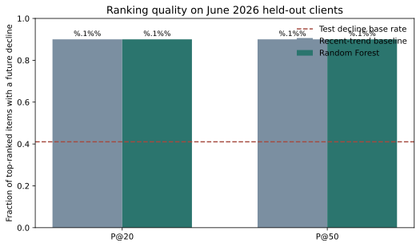
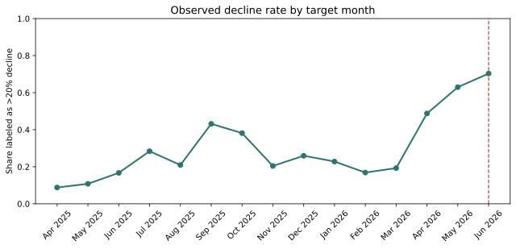
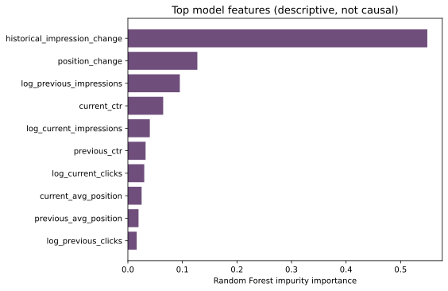
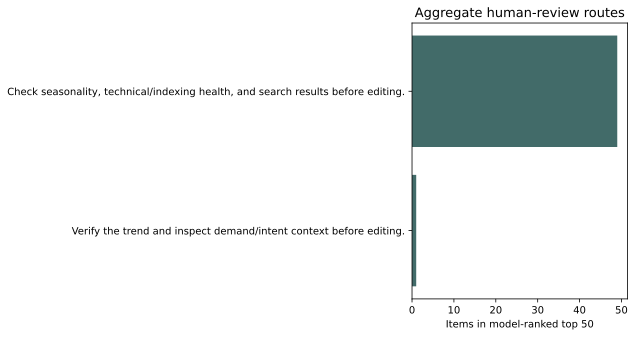

FlyRank warehouse · ML-11 capstone
Can prior search signals flag next-month content decline across new clients?
Abstract
This paper asks whether recent Google Search Console signals can help FlyRank editors prioritize existing pages for investigation in the content-refresh workflow when impressions decline. It uses the full 78,835,655-row FlyRank warehouse daily-performance table to create 469,410 eligible client-content-month examples after client-specific GSC start-date and coverage filters. A fixed Random Forest and a transparent recent-trend baseline are evaluated on June 2026 for 4,245 examples from nine clients excluded from training. At a 41.0% test decline rate, both rankers reach 90% precision at 20 and 50; the model has slightly lower ROC AUC (0.720 vs. 0.721), equal average precision (0.646), and only a one-point precision-at-100 edge (87% vs. 86%). These findings show no meaningful improvement over the simpler trend rule and support only retrospective human-review prioritization, not causal refresh impact or future guarantees.
01 · Introduction
A review queue, not an automatic editor
In FlyRank's content-refresh workflow, an editor sees search impressions fall for existing pages and needs to decide what to investigate first. A ranking can organize that review, but it cannot tell whether the cause is seasonality, a technical issue, changed search intent, or the content itself.
The research question is whether the last two complete months of Google Search Console (GSC) signals can rank content items whose average daily impressions will fall by more than 20% in the following month. The unit is one pseudonymized content item for one client and one target month. False positives consume review time; an unjustified edit can damage a useful page. Therefore, the output is a human-review priority, never an instruction to rewrite, redirect, merge, or remove a page.
02 · Data
A large daily warehouse, narrowed to measurable monthly histories
The source is the gated FlyRank/internship-warehouse release, build flyrank_pseudonymized_warehouse_release_v20260703. The analysis reads fact_content_daily_performance, which has 78,835,655 published daily rows from 27 January 2025 through 30 June 2026.
For each client, dates before gsc_data_start are excluded and monthly rates use only dates with gsc_data_available. Each of the two feature months and the target month must have at least 20 available GSC days. The two feature months together must have at least 200 impressions.
The fixed-window fact_content_query_90d table is excluded because its window overlaps the outcome. GA4 is excluded because its availability varies and this question is about GSC. Hashed IDs are used only for grouping and the local split/queue; they are neither features nor public outputs. The paper includes no client names, page URLs, titles, keywords, or raw queries.
03 · Methodology
Two completed months in; the immediately following month out
- Aggregate monthly signals. Compute average impressions, clicks, and position using GSC-available days.
- Define the target. A page-month is labeled as declining when next-month average daily impressions are below 80% of the mean daily rate in the two feature months.
- Compare two rankers. The transparent baseline ranks by the recent relative impression-rate drop. The fixed Random Forest uses log impression/click rates from both months, current and prior average position, position change, historical impression change, and CTR.
- Hold out future clients. June 2026 is the test month. A seeded 20% group of clients with eligible June examples is excluded from all training months; the remaining training labels end in May 2026.
The model is a median-imputation pipeline with 200 Random Forest trees, maximum depth 10, minimum leaf size 50, balanced subsample class weights, and random state 42. The client/content hashes, target-month measurements, and label-derived fields are excluded from the feature list. This design evaluates ranking for a future month and clients not used for fitting; it does not establish performance for every client or later periods.
04 · Results
The recent-trend rule matches the model at the top of the queue
The model trained on 350,172 earlier examples from 30 non-held-out clients. The final test contains 4,245 June 2026 examples from nine held-out clients, with a decline base rate of 41.0%. Both methods reach 90% precision among the top 20 and top 50 items, and both have average precision of 0.646. The baseline ROC AUC is 0.721 versus 0.720 for the Random Forest; the model's only top-k edge is P@100 of 87% versus 86%.
| Ranker | Test base rate | ROC AUC | Average precision | P@20 | P@50 | P@100 |
|---|---|---|---|---|---|---|
| Recent-trend baseline | 41.0% | 0.721 | 0.646 | 90% | 90% | 86% |
| Random Forest | 41.0% | 0.720 | 0.646 | 90% | 90% | 87% |
The baseline's P@50 is about 2.19 times the test base rate. The one-point P@100 difference does not show a meaningful advantage for the more complex model. The full eligible June cohort has a 70.3% decline-label rate, quite different from the 41.0% rate among held-out clients; the test base rate must be interpreted for this test group, not as a universal client prevalence.


What the model uses
Historical impression change has the largest Random Forest impurity importance (0.549), followed by position change (0.127). The model is relying heavily on the trend signal; these importances are descriptive and do not show that changing content will cause impressions to recover.

05 · Limitations
What this result cannot establish
- The test is one future month from one warehouse release. It does not guarantee performance in later months, other seasons, or all clients.
- The client holdout excludes clients used for training, but it includes only nine clients; its 41.0% test base rate differs from the full June cohort's 70.3%.
- Coverage and volume filters select measurable pages and leave out sparse or low-impression content.
- The label is a relative impression-rate drop, not a judgment of content quality. Search demand, seasonality, technical issues, measurement coverage, and ranking changes can all affect it.
- This is observational ranking analysis. It does not estimate a causal refresh effect, calibrated intervention probabilities, revenue, editorial costs, or incremental return.
06 · Ranked recommendations
Use ranking to start a human diagnosis
Because the Random Forest does not materially outperform the recent-trend baseline, the simpler rule is the appropriate first triage comparator. The model-ranked top 50 is retrospective, constructed from April–May 2026 signals to assess June outcomes; it is not a live action queue.
- Check measurement and indexing first. Confirm GSC coverage, indexability, technical health, and whether the page changed recently.
- Check context before editing. Review seasonality, search-result changes, demand, and intent fit. A falling impression rate alone does not identify a content problem.
- Require an editor's judgment. Only make an update when the investigation supports it; never auto-publish, redirect, merge, or delete content from a score.
- Measure any later intervention separately. Log the decision and evaluate subsequent outcomes with a future, time-aware design before considering broader use.
In the retrospective top 50, 49 items route to checking seasonality, technical/indexing health, and search results; one routes to verifying the recent impression trend. These are review prompts, not prescriptions.

07 · Reproducibility
Re-run from the notebook
- Install the project dependencies with
python -m pip install -r requirements.txt. - Accept the Hugging Face dataset gate and authenticate locally with a Read token using
hf auth login. Never place the token in a notebook or repository file. - Open the linked capstone notebook and run all cells from top to bottom. The analysis uses random state 42 and caches its aggregate panel locally to avoid rescanning the 78.8M-row table on reruns.
The local feature cache and hashed-ID ranked queue are gitignored. The public paper contains aggregate results only. The recorded environment was Python 3.12.3, DuckDB 1.5.5, pandas 3.0.5, and scikit-learn 1.9.0.
08 · Acknowledgments
Data credit
This work uses the FlyRank ML Internship warehouse release, build flyrank_pseudonymized_warehouse_release_v20260703, sourced from central_data_warehouse. Data credit: FlyRank and the FlyRank internship team. The warehouse is pseudonymized; this page reports aggregates and does not reproduce client-level records.